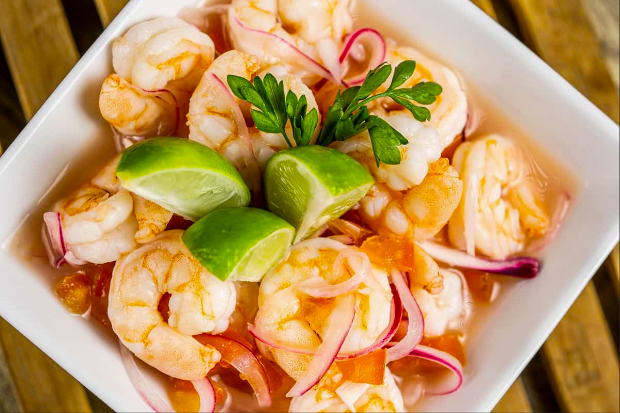
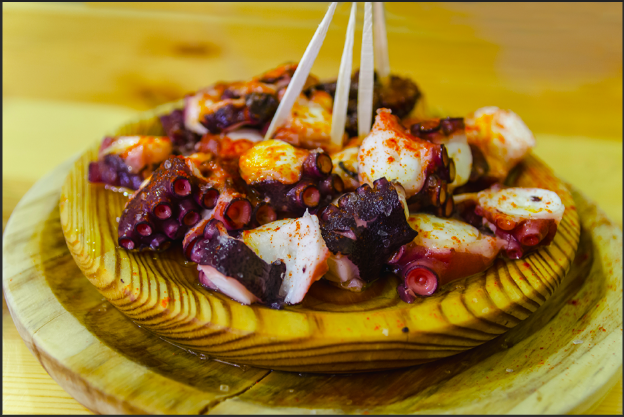
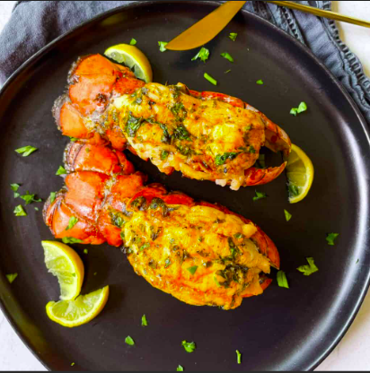

Explora nuestras recetas con mariscos frescos
Descubre una selección de recetas con mariscos, perfectas para los amantes del sabor del mar.
Ceviche de Camarón
Una receta refrescante de ceviche de camarón, ideal para los días calurosos.
- Tiempo de preparación: 20 minutos
- Ingredientes: camarón, cebolla, tomate, limón, cilantro
Pulpo a la Gallega
Un plato clásico español, el pulpo a la gallega es fácil de hacer y lleno de sabor.
- Tiempo de preparación: 45 minutos
- Ingredientes: pulpo, aceite de oliva, pimentón, sal
Langosta al Horno
Langosta al horno con mantequilla de ajo, ideal para ocasiones especiales.
- Tiempo de preparación: 1 hora
- Ingredientes: langosta, mantequilla, ajo, limón